ASCA(Africa Smart Cities & Townships Alliance) 위원회 한국기업 전담 에이전시로 동아프리카 스마트시티·글로벌 서밋 기업 소싱·매칭·성장·지원을 담당합니다. 스마트시티 정책 개발 및 서비스 컨설팅, 스마트시티&라이프 리빙랩, ASCA K 포럼 운영까지 해외 네트워크를 만드는 플랫폼입니다.
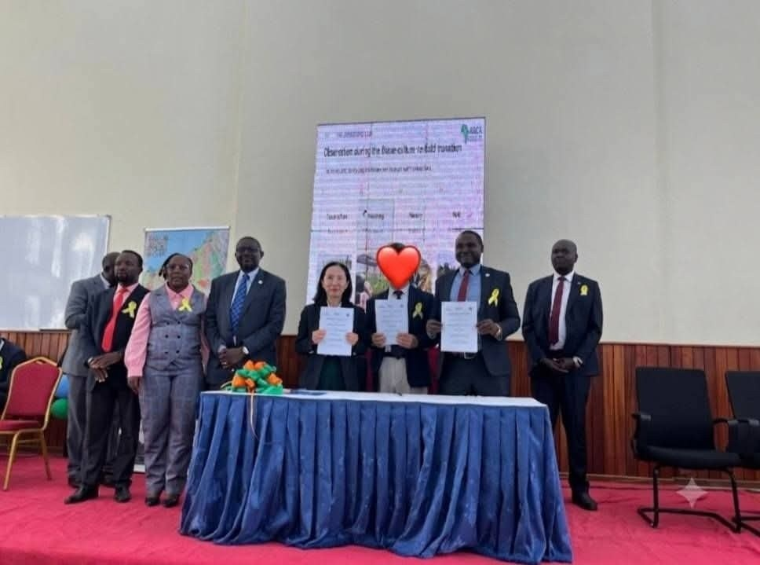
아프리카가 바라보는 보건의료의 미래를 조망한 글로벌 암 포럼. 한국대표단은 개회부터 폐회까지 자리를 지키며 한국의 기술과 가능성을 알렸고, 의료·기술·도시 인프라를 잇는 Healthcare Smart City 비전을 확인했습니다.
ASCA 초대 의장이자 키수무 주지사인 Prof. Peter Anyang' Nyong'o를 만나, 암 생존자인 그의 정책 의지가 담긴 Victoria Hospital의 Chung Jeong-Eun–Nyong'o Cancer Centre 현장을 방문했습니다. 서부 케냐 지역 의료 거점으로서의 가능성을 확인한 자리였습니다.
물과 위생이라는 도시의 가장 기본적인 조건을 주제로 한 포럼. 어반시냅스는 이날 Homa Bay 카운티 정부·ASCA와 함께 '스마트시티 개발 협력 MOU'를 체결하며, ASCA와 한국을 잇는 한국 담당 에이전시로서 공식 협력관계를 구축했습니다.
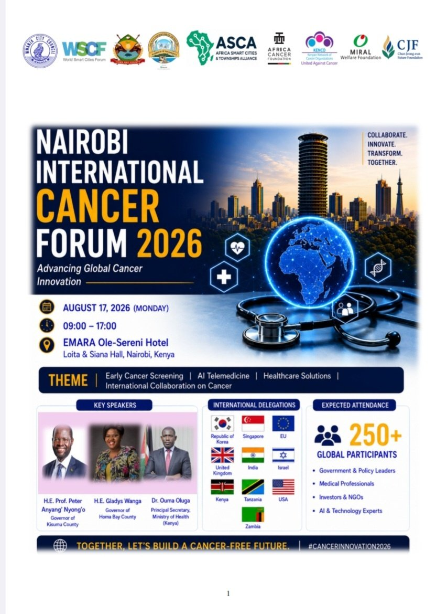
DAY 1 · Nairobi International Cancer Forum 2026
8.17 · EMARA Ole-Sereni Hotel
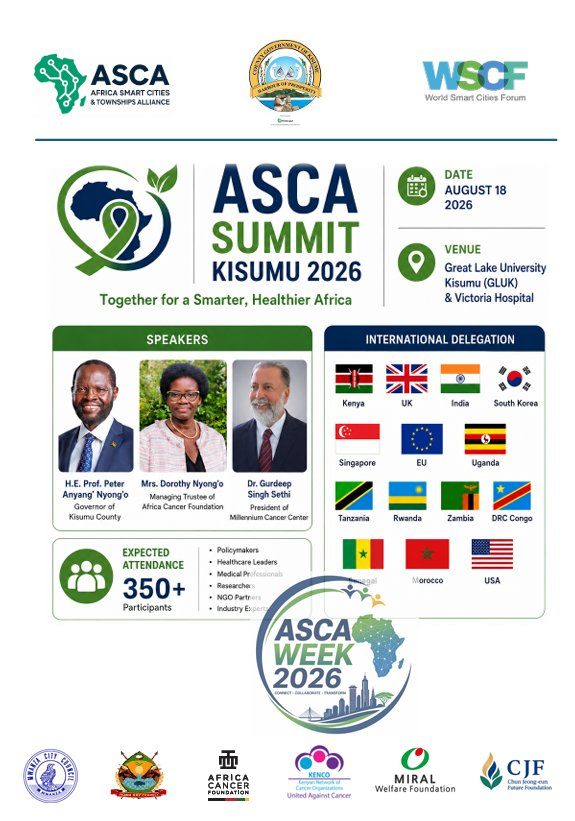
DAY 2 · ASCA Summit Kisumu 2026
8.18 · Great Lake University Kisumu
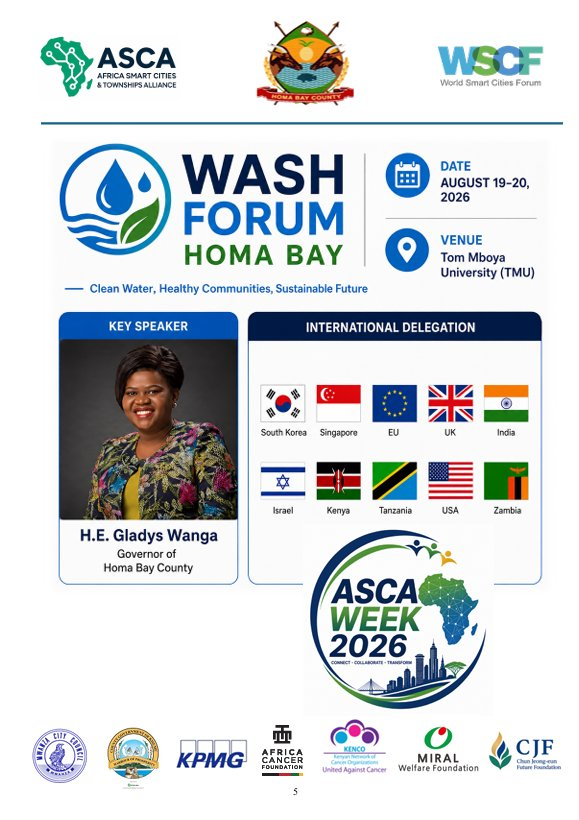
DAY 3 · WASH Forum Homa Bay
8.19–20 · Tom Mboya University
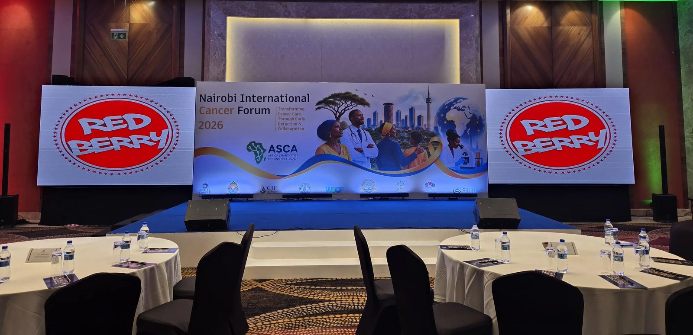
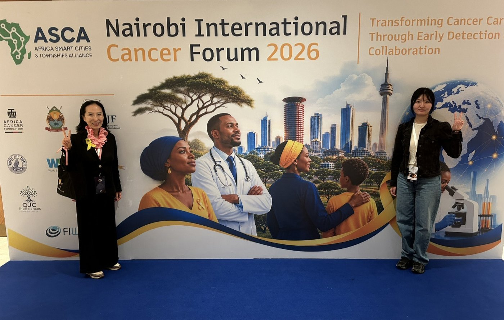
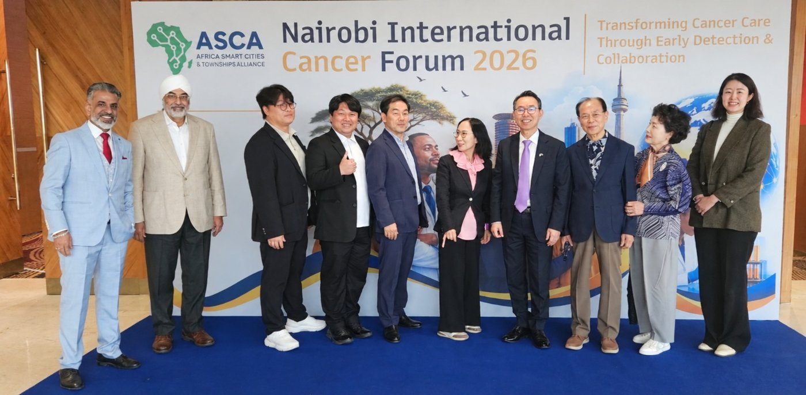
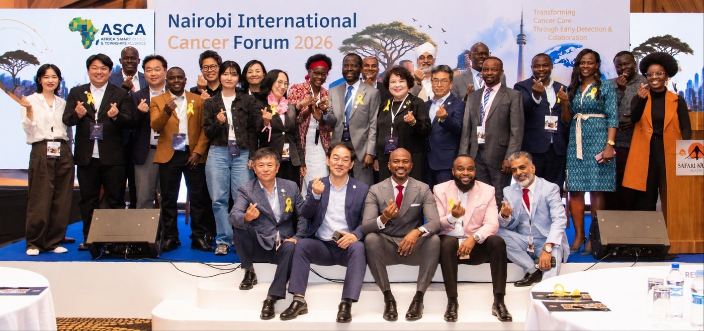
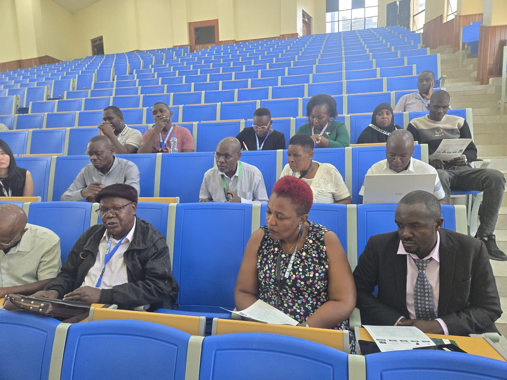
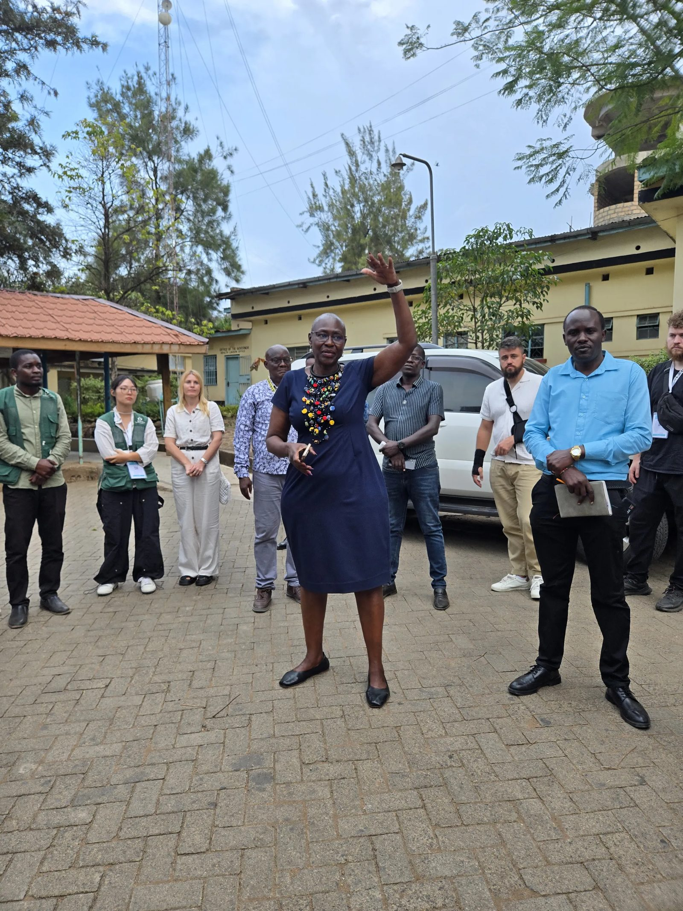
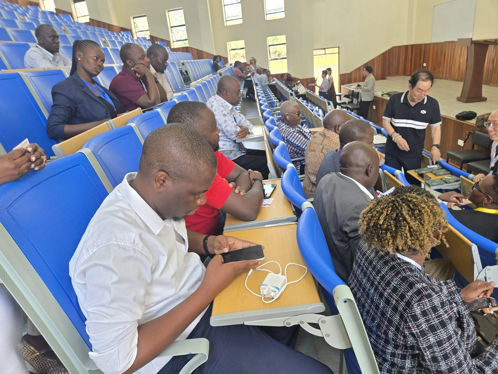
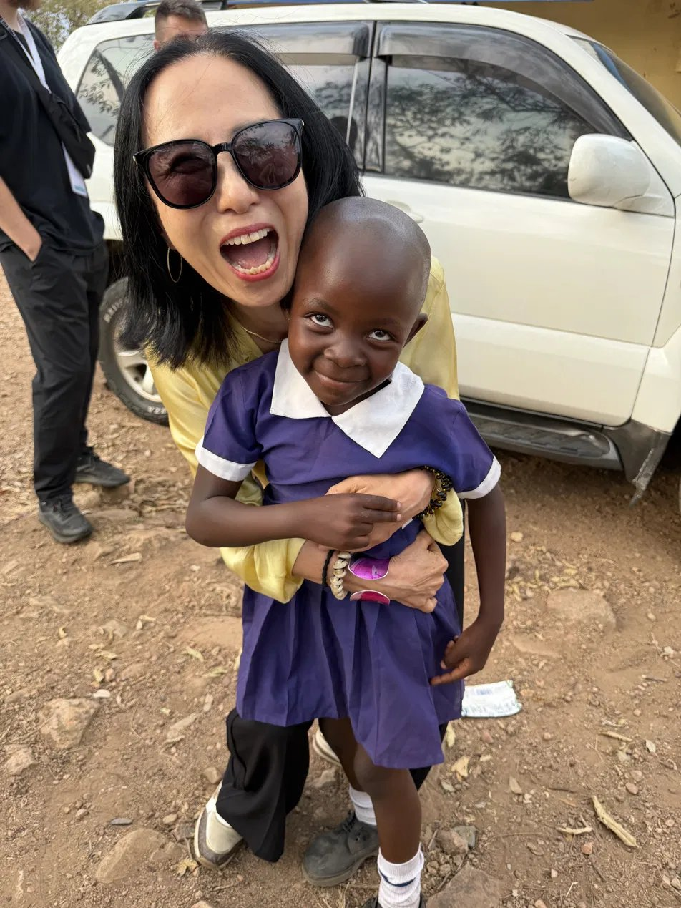
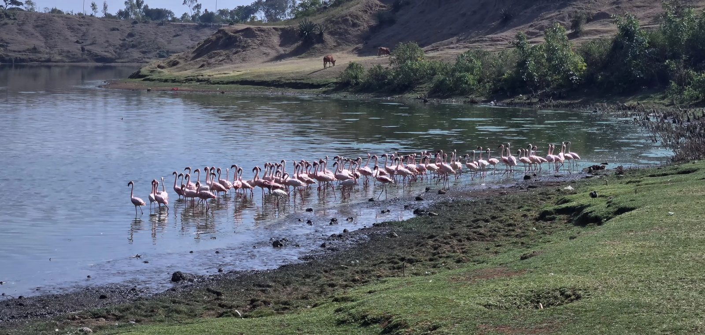
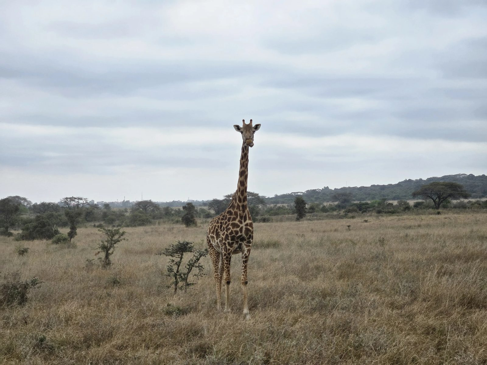
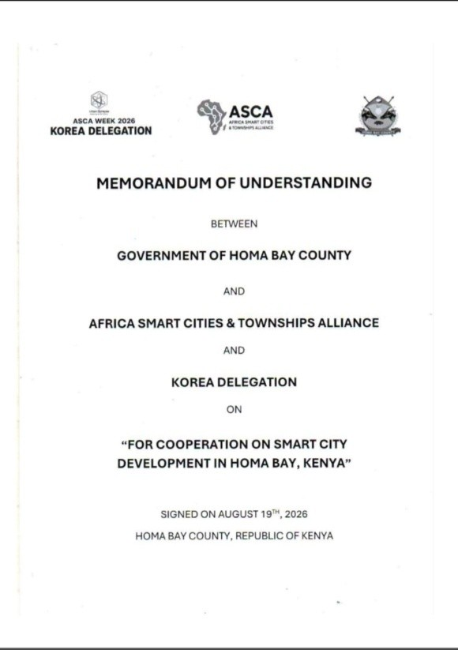
MOU 표지 — Homa Bay 카운티 정부 · ASCA · 한국대표단
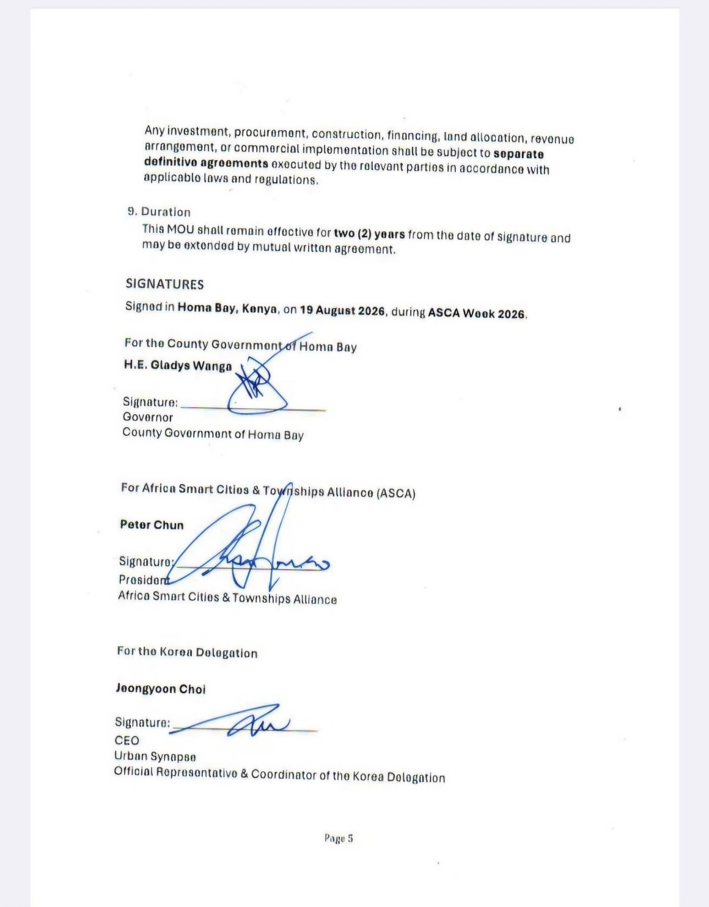
서명 페이지 — Gladys Wanga 주지사 · Peter Chun ASCA 회장 · 최정윤 어반시냅스 대표